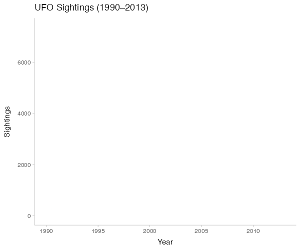

Ufo Sightings in the United States
This project analyzes over 80,000 reported UFO sightings across the United States between 1990 and 2013. By visualizing where these sightings occurred, we explore how cultural moments, media influence, and historical events may have shaped public perception of unidentified flying objects. Our goal is to understand the broader patterns behind these reports and the societal context in which they emerged.
Conclusion: UFO sighting reports are not merely records of unexplained phenomena - they reflect broader cultural and societal forces. Our visualizations show that spikes in sightings often align with media attention and conspiracies, suggesting that perception plays a critical role in these encounters. By visualizing when and why these reports occurred, we gain insight not just into the data, but into the evolving relationship between society and belief. Ultimately, the story of UFO sightings is as much about us as it is about what’s in the sky.